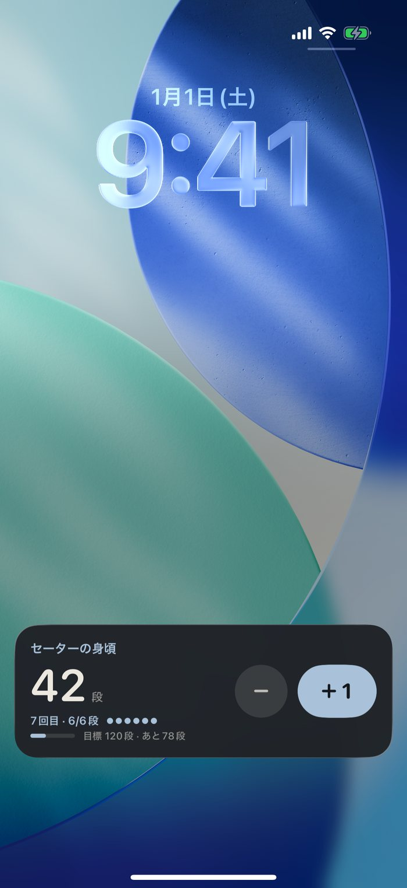

Rowmark・使い方ガイド・English
編み物の段数をiPhoneのロック画面で数える方法
1段編むたびに、ロックを解除して、アプリを探して、＋1を押す。両手に針を持ったままだと、これが毎回の手間になります。ロック画面にカウンターを出せば、押すのは1回だけです。
編み物・かぎ針の段数カウンターRowmarkで、アプリを開かずに数える方法を紹介します。
アプリを開かずに数える3つの方法
| 場所 | 押すもの | 料金 |
|---|
| ホーム画面のウィジェット（Small） | ウィジェットの＋1・−1 | 無料 |
| ロック画面のカウンター | ロック画面・ダイナミックアイランド・StandByの＋1・−1。ロックしたまま押せる | Pro |
| アクションボタン・コントロールセンター | 「＋1段」（iOS 18以降。アクションボタンはiPhone 15 Pro以降） | Pro |
Rowmark Proは買い切りです。サブスクではありません。
ロック画面で数える
- Rowmarkを開き、「作品」の一覧で今編んでいる作品をタップします。
- 「アプリを開かずに数える」の「ロック画面」をオンにします。
- iPhoneをロックします。作品名・今の段数と、＋1／−1のボタンが出て、ロックしたまま押せます。

ロック画面のカウンターは、iOSの仕様で1回につき8時間ほどで終わります。消えたらRowmarkを開いて「ロック画面」をもう一度オンにしてください。段数はそのまま残っています。
アクションボタンで＋1段
iPhone 15 Pro以降・iOS 18以降で使えます。
- 設定 › アクションボタンを開きます。
- コントロールを選び、Rowmarkを選びます。
アクションボタンを押すたびに、今の作品が1段進みます。「＋1段」はコントロールセンターや、ロック画面下のボタン（ロック画面を長押し›「カスタマイズ」）にも置けます。
無料：ホーム画面で＋1
- ホーム画面の何もないところを長押しして、アプリが揺れるまで待ちます。
- 左上の「編集」（または＋）をタップして「Rowmark」を検索し、Smallを選んで「ウィジェットを追加」をタップします。
- ウィジェットの＋1か−1を押します。アプリは開きません。

よくある質問
ロック画面のカウンターが消えました。ロック画面のカウンター（ライブアクティビティ）は、iOSの仕様で8時間ほどで終わります。Rowmarkを開いて「ロック画面」をもう一度オンにしてください。段数はそのまま残っています。
「ライブアクティビティがオフです」と出ます。設定 › Rowmarkでオンにしてください。
ロック画面で数えるのは無料ですか？ロック画面のカウンター・ロック画面ウィジェット・アクションボタンはRowmark Pro（買い切り）です。ホーム画面のSmallウィジェットの＋1・−1は無料で、アプリを開かずに押せます。
作品を2つ以上編んでいます。ロック画面のカウンターは、アプリで選んだ作品に合わせて切り替わります。「作品」の一覧で別の作品をタップしてください。
App StoreでRowmarkを入手
サブスクなし・広告なし・アカウント不要・Rowmarkについて・使い方とよくある質問